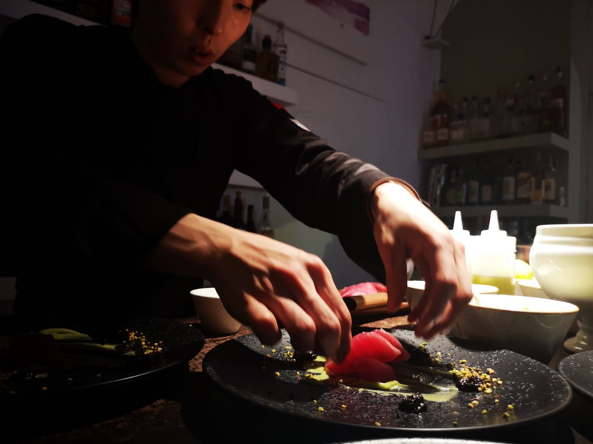
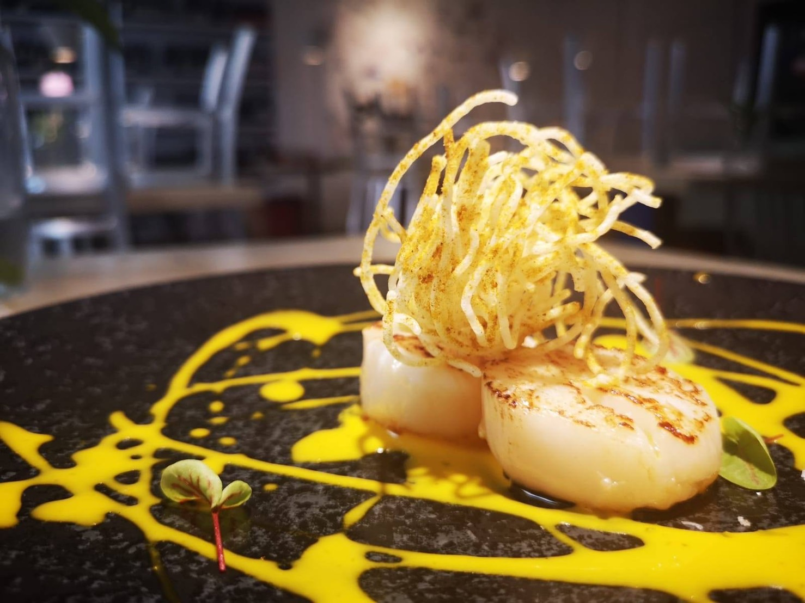
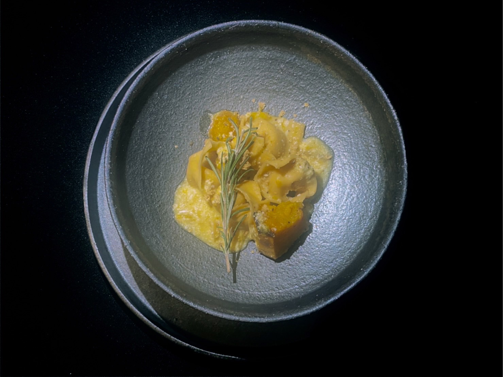
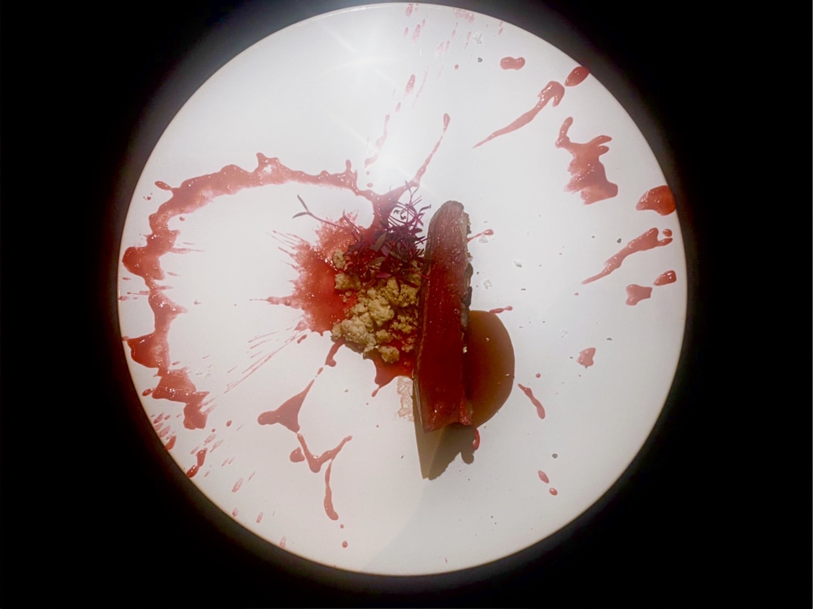

Ryuko Enoue
私は23歳の頃に、イタリアへ渡り〇〇レストランや〇〇レストランをはじめとしたミシュラン2つレストランで経験を積んで きました。イタリアの感性や味、パフォーマンスを肌で感じ刺激を受けました。




今後の活動は札幌『4th Place 第4の場所』人と人のつながりを大切にしたコンセプトの空間をお借りし、食の体験を通じてお客様に『幸せ』を 感じていただく事が私の想いです。4th Place × 江ノ上龍光 が
予約ボタン